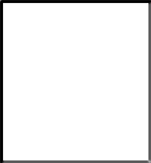

Text Alternatives for Images

There used to be this joke where you would get a picture of just a white box. The punchline varied, yet it was always something like, "a snowman in a blizzard" or simply something that was white on white. Of course, there were many other renditions of this - the yellow box that was a banana on the sun, and so forth.
Although they were sad attempts at humor, they were great examples of using alternate text (also called text descriptions).If you look at the box to the right, it looks like an empty box. When I say, "it's a snowman in a blizzard," it is very likely that your brain created that scenario in your mind to where you might actually answer, oh, ok, I see that now.
When Assistive Technology (AT) encounters a item that is not text, it looks in the code for alternative text (alt text). If alt text has not been used, the graphic appears blank to the user, just like the image above appears blank to you. If the alt text is there, the AT will read the description and the user will receive the conveying information just as a visual user does when they see the image.
Why is it important?
Alt text is important as a non-visual person will not be able to access the information of visual items. How do you know if a visual item is conveying information? If you remove the element does the document, presentation, etc. does it lose meaning? If so, then it conveys meaning. If not, it is most likely aesthetic and does not need alt-text (border images, watermarks, etc.)
Alt text can be simple or complex depending on what the image is conveying. As well, the same image may convey different information depending on what context it is being used in. For example, a photo of a cloudy sky would convey a different meaning if used in an atmospheric science course than in an art class.